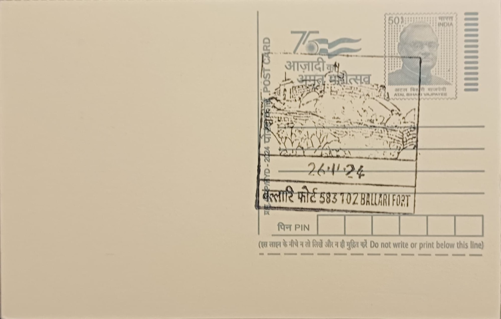

Ballari Fort
ಬಳ್ಳಾರಿ ಕೋಟೆ


Ballari Fort takes its name from the hill on which it stands, the Ballari Gudda, a massive granite outcrop rising within what is now Ballari city in Karnataka's Bellary district. The site's earlier fortification is traditionally attributed to Hanumappa Nayaka, a feudatory chief under the Vijayanagara Empire, who built the original upper fort atop the rock as a hill stronghold for the Hande family that held sway over the surrounding countryside. This Vijayanagara-era origin places the fort within the broader pattern of hill forts raised across the Deccan to guard trade routes and frontier territory during the empire's later, more fragmented period, long before the region became a contested prize among eighteenth-century powers.
As a fortified hill complex combining an upper citadel and a separately walled lower fort, Ballari Fort ranks among the more substantial garrison forts of the Deccan's ceded districts, valued historically for its command over the surrounding plains rather than for any single religious or artistic distinction. Its significance rests chiefly on its military and administrative role across three successive regimes, Vijayanagara feudatories, the Mysore Sultanate under Hyder Ali and Tipu Sultan, and finally British colonial administration, making it a layered record of Deccan power politics rather than the product of any one ruling house. The fort hill itself, locally cited as one of the larger monolithic granite hills in the region, with the Ballari Gudda reported at roughly 480 feet in height and about two miles in circumference, gives the site an additional geological distinction beyond its built fortifications.
Hyder Ali seized the fort from the Hande family around 1769 and, over the following decade, had the lower fort newly constructed while the older upper fort was substantially refurbished, work carried out under a French military engineer in his service. Tipu Sultan subsequently reinforced the defenses further, adding to the bastions and ramparts that still ring the hill. The combined fortifications are said to extend some three and a half miles in circumference, with ramparts, bastions, steep rock-cut stairways, and granite-hewn water reservoirs built into the hillside to sustain a garrison through prolonged sieges, engineering suited to a hill that is otherwise an unbroken monolith on its western face.
A persistent local tradition recounts that Hyder Ali, on inspecting the finished works, found that the new fortifications stood at a lower elevation than the neighboring hill known as Kumbara Gudda, leaving the garrison exposed to fire from that higher ground, and that he had the French engineer responsible put to death at the fort's eastern gate in anger at the oversight. Whether or not the episode occurred exactly as told, it is retold consistently enough in local accounts to have become the fort's best-known story, illustrating both the strategic stakes Hyder Ali attached to the stronghold and the harsh discipline of his military administration. Within the fort precincts, a Hanuman shrine stands near the lower fort's eastern approach, alongside the Durgamma, or Ballaramma, temple, a Durga shrine locally reckoned to be around 350 years old, and two mosques, together reflecting the mixed garrison population the fort housed under successive rulers.
After Tipu Sultan's defeat in 1799, the fort and the surrounding Ceded Districts passed to British control and were later administered under the Madras Presidency, after which the fortifications gradually lost their military function and the town below the hill grew into the present-day city of Ballari. The fort hill and its structures are today maintained as a heritage and tourism site under state and local authorities, with the climb up its stone-cut steps to the upper fort remaining a popular activity for visitors who come chiefly for the panoramic view it affords over the city and the plains beyond, a vantage point that was once the fort's principal strategic asset and is now its main draw for sightseers.
| Date of Introduction | November 26, 2024 |
|---|---|
| Address | Sub Postmaster, |
| Ballari Fort SO, | |
| Ballari (dt.), Karnataka - 583102. |